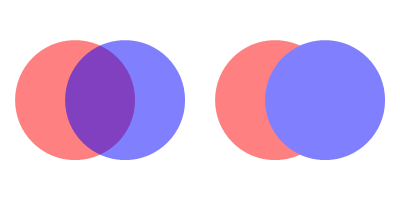

BeginVectorLayer()
Syntax
BeginVectorLayer([Alpha])Description
Begins a new empty layer on top of the current vector drawing output. All future drawing operations will be performed on this layer until EndVectorLayer() is called. This command also saves the current drawing state in the same way as SaveVectorState(). Multiple layers can be created.
Parameters
Alpha (optional) Specifies the alpha transparency of the new vector layer. Allowed values are from 0 (fully transparent) to 255 (fully opaque). The default is 255 (fully opaque).
Return value
None.
Remarks
The resources needed to create the temporary layer depend on the size of the current clipping path. It is therefore a recommended to set a clipping path that covers only the area where the temporary layer will contain any drawing to save resources and improve drawing performance.
Example
If OpenWindow(0, 0, 0, 400, 200, "VectorDrawing", #PB_Window_SystemMenu | #PB_Window_ScreenCentered) CanvasGadget(0, 0, 0, 400, 200) If StartVectorDrawing(CanvasVectorOutput(0)) ; Semi-transparent drawing on the base layer AddPathCircle(75, 100, 60) VectorSourceColor(RGBA(255, 0, 0, 127)) FillPath() AddPathCircle(125, 100, 60) VectorSourceColor(RGBA(0, 0, 255, 127)) FillPath() ; Opaque drawing on a semi-transparent layer BeginVectorLayer(127) AddPathCircle(275, 100, 60) VectorSourceColor(RGBA(255, 0, 0, 255)) FillPath() AddPathCircle(325, 100, 60) VectorSourceColor(RGBA(0, 0, 255, 255)) FillPath() EndVectorLayer() StopVectorDrawing() EndIf Repeat Event = WaitWindowEvent() Until Event = #PB_Event_CloseWindow EndIf

See Also
EndVectorLayer(), SaveVectorState()
Supported OS
All